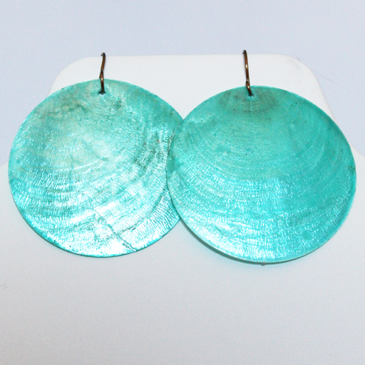

This is an 18-inch, Cleopatra-style necklace featuring Picture Jasper and gold cable chain. The design is a modern
favorite inspired by ancient Egyptian jewelry-makers. Picture Jasper, also known as the Stone of Global Awareness, has
been revered by many cultures over the centuries for its deep connection to the Earth and abilities to protect its wearer.
$25.00
Brass Swirl Earrings
At 2 inches (height) by 1.5 inch (width), these beautiful brass earrings are sure to be noticed. They’re casual enough
to wear to work and classy enough to dress up for a special occasion.
$25.00
Red Grape Cluster Earrings
These grape cluster earrings are 1 x 1 inch, featuring brass artistic wire and red Czech glass crackle beads. They are
very similar in style to grape cluster earrings to archeological artifacts from the Byzantine Empire. This style can also
be found among Victorian-era antiques.
$25.00

Turquoise Seashell Earrings
Bright, fun and daring… These turquoise seashell earrings are a perfect way to splash a little color into your look.
Even at 2.5 inches in diameter, they are thin, lightweight, and comfortable to wear.
$25.00
Mother-of-Pearl Strand Necklace
This 30-inch strand necklace is a surefire eye-catcher, made with silver cable chain, silver filigree bead caps, and
oval-cut mother-of-pearl seashells. This style of necklace was also popular in the west during the 1930s and 40s.
$50.00
Mother-of-Pearl Earrings
These eyecatching and lightweight earrings hang about one inch long. They are made with silver filigree bead caps and
oval-cut mother-of-pearl seashells.
$25.00
Millefiori Glass Heart-Shaped Wine Charms
This set of six, heart-shaped, glass wine charms are perfect for parties. They are made with colorful,
handcrafted, Italian Millefiori glass beads.
$20.00
Black and White Swirl Printed Seashell Earrings
These beautiful seashell earrings are just shy of 1 inch in diameter with silver ear wires. They are lightweight,
eye-catching, and super comfortable.
$25.00
White Seashell Earrings
These lovely and versatile earrings are made with silver artistic wire, white seashell beads and white frosted
sea glass beads. They are 1-inch in diameter.
$25.00
Red Batik Printed Seashell Earrings
These seashell earrings are printed with a rich, red batik pattern that includes hints of leaves. They are a
little over 1 inch in diameter with brass artistic wire and add a lovely splash of color to any outfit.
$25.00
Red Jasper Strand Necklace
This 30-inch strand necklace is a beautiful addition to any wardrobe. It features brass artistic wire and red,
faceted jasper. This style of necklace was also popular in the west during the 1930s and 40s.
$50.00
Green Malachite Earrings
A combination of rich green colors mix together in these malachite earrings. They are classy and lightweight
with brass artistic wire. Many cultures and traditions honor green malachite as a stone of travel that absorbs
negative energy and protects its wearer from harm.
$20.00
Goldstone Egyptian Scarab Earrings
These goldstone earrings with brass artistic wire catch the light beautifully. They are carved into a scarab
shape, a tradition strongly rooted in ancient Egyptian culture. There are many meanings to this symbol, including
the cycle of life, protection, and good luck. Goldstone is a manmade glass with flecks of copper suspended
in it. It was originally created by French monks.
$20.00
Green Malachite Necklace
A combination of rich green colors mix together in this malachite necklace made with brass artistic wire. Many
cultures and traditions honor green malachite as a stone of travel that absorbs negative energy and protects its
wearer from harm.
$35.00
Yellow Seashell Earrings
These lovely and versatile earrings are made with brass artistic wire, yellow seashell beads and yellow glass
beads. They are 1-inch in diameter and will add a bright splash of color to your look.
$25.00
Carnelian Necklace
Made with brass wire, red glass, and Carnelian, this 18-inch necklace is a beauty! Carnelian has been used in jewelry-making
since the Bronze Age and some believe that it enhances courage, passion, and love.
$40.00
Tiger Eye Earrings
These gorgeous earrings catch the light in the most beautiful ways! They are about 1 inch in diameter and made from Tiger Eye,
a stone that some believe provides the wearer protection, good luck and prosperity.
$25.00
Teal Flower Printed Seashell Earrings
These printed seashell earrings are about 3/4 inches in diameter. These colorful, artsy earrings are made with silver artistic wire.
$25.00
Black Rainbow Calsilica Earrings
These earrings are about half an inch in diameter with black and white striped rainbow calsilica and silver artistic wire.
$20.00
Yellow-dyed Howlite Peace Sign Earrings
These peace sign earrings are about 3/4 inches in diameter, made with dyed Howlite and brass artistic wire.
$15.00
Pink Batik Printed Seashell Earrings
These seashell earrings are printed with a pink batik pattern. They are a little over 1 inch in diameter with brass
artistic wire and add a lovely splash of color to any outfit.